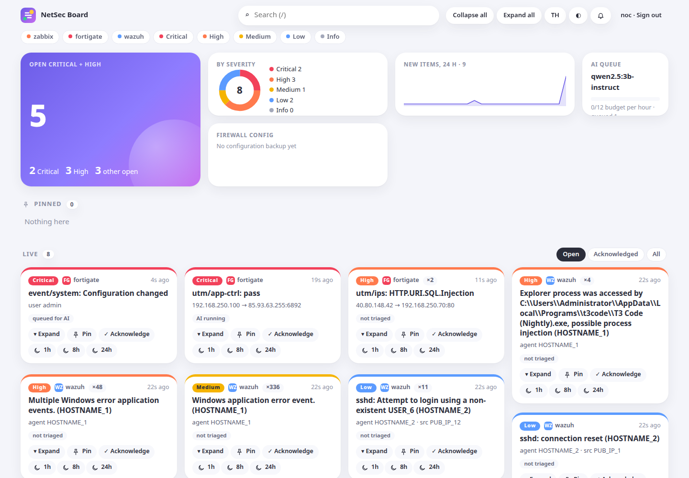

NetSec Board: กระดานเหตุการณ์ network และ security ที่ดึงข้อมูลเอง
NetSec Board: a network and security board that fetches its own data
รวม FortiGate, Wazuh และ Zabbix ไว้บนกระดานเดียว แจ้งเตือนเฉพาะเรื่องที่สำคัญ มี AI ในเครื่องช่วยอธิบาย ติดตั้งในองค์กร อ่านข้อมูลอย่างเดียว
FortiGate, Wazuh and Zabbix on one board, notifications only for what matters, a local AI that explains. Runs on-prem and only reads.
curl -fsSL https://raw.githubusercontent.com/MONNNNNNNNNNN/kku-netsec-assistant/main/install.sh | sh
วัดจากระบบจริง
Measured on real systems

ทำอะไรได้
What it does
ดึงข้อมูลเอง
Pulls data by itself
FortiGate (syslog), Wazuh (indexer หรือ integration), Zabbix (API หรือ webhook) ตามตารางเวลา ไม่ต้อง import เอง
FortiGate (syslog), Wazuh (indexer or integration), Zabbix (API or webhook) on a schedule: no manual imports.
กระดานที่อ่านง่าย
A board you can read
เหตุการณ์ซ้ำรวมเป็นการ์ดเดียว ปักหมุด acknowledge snooze ปิดเองเมื่อเงียบ เปิดใหม่เมื่อเกิดซ้ำ
Repeats become one card; pin, acknowledge, snooze; quiet cards close, recurrences re-open.
ระดับที่ไว้ใจได้
Severity you can trust
มาจาก field ที่อุปกรณ์สร้างเท่านั้น ปรับตามองค์กรได้ (กฎ, เครื่องสำคัญ, VLAN) ข้อความใน log ลดระดับไม่ได้
From device fields only, tunable per site (rules, key servers, VLANs); log text can never lower it.
AI ที่มี guard
AI with a guard
โมเดลในเครื่องอธิบายการ์ด guard ไม่ยอมให้ลดระดับ และไม่ให้ AI ปลุกทีมจากการ์ดระดับต่ำ
A local model explains cards; the guard never lets it lower severity or page the team from a low card.
แจ้งเตือนอย่างระวัง
Careful notifications
ntfy, Telegram, LINE, webhook ปิดบัง IP และชื่อเครื่องก่อนส่งออกคลาวด์ มีเพดานและช่วงเงียบ
ntfy, Telegram, LINE, webhook; IPs and host names masked before anything leaves for the cloud; caps and quiet hours.
ทดสอบกับของจริง
Tested on real systems
Wazuh 4.14.9, Zabbix 7.0.32, log FortiGate จริง (BOTSv1, CC0), LLM ในเครื่อง
Wazuh 4.14.9, Zabbix 7.0.32, real FortiGate logs (BOTSv1, CC0), a local LLM.
เดโมในเบราว์เซอร์ (v0.3)
Browser demo (v0.3)
ตรวจ config FortiGate เทียบ ISO/IEC 27001:2022 และห้องทดลอง log injection ทำงานในเบราว์เซอร์ทั้งหมด ข้อมูลสังเคราะห์
FortiGate config review against ISO/IEC 27001:2022 and a log-injection lab, running entirely in your browser on synthetic data.